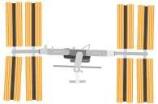
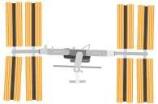
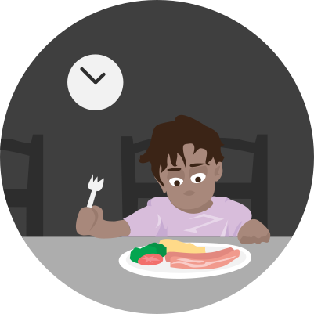

Det har varit en lång utveckling
För några miljoner år sedan började människan att utvecklas.
Då hoppade även vi runt i skogen och letade mat för att överleva dagen.


Varmt välkommen till berättelsen om köttindustrin i Sverige
Människan har utvecklats snabbt. Vi har rest till månen och uppfunnit selfie sticks.
Men något som lever kvar är vår köttkonsumtion. Vi bara älskar kött.
Kött är för många en självklarhet, för andra är det en jobbig verklighet.
Men vilka hemligheter döljer sig i det svenska köttet?

 


För några miljoner år sedan började människan att utvecklas.
Då hoppade även vi runt i skogen och letade mat för att överleva dagen.

Med tiden blev vi smartare och hittade nya lösningar för att underlätta vår tillvaro, med hjälp av våra händer så började vi att tillverka saker.

Människan är varken köttätare eller växtätare, vi är däremot allätare. Det betyder att vi kan välja själv mellan att äta andra djur eller vegetabilisk föda. Källa
Tillvaron under äldre stenåldern (ca 40 000-10 000 f.Kr) styrdes helt och hållet av jakten på föda vilket gjorde att vi följde bytesdjurens fotspår. Vi var främst jägare men åt även de växter som vi kunde hitta. Källa
För omkring 12 000 år sedan lärde vi oss att odla och blev jordbrukare. Inte längre behövde vi jaga vår föda, vi kunde odla det själv. Källa

Vi blev bofasta och kunde ordna tillvaron på ett effektivare sätt, men vi behöll djuren som boskap. Vi gjorde dom tama och fortsatte att äta dom. Källa
Med en så stor efterfrågan... hur ser industrin ut?
Jordbruksverkets statistikdatabas 2013
Hon kallas även för nötdjur. Ordet nöt kommer från det forngermanska ordet ‘nauta’, vilket betyder egendom. Källa
Deras kött kommer att användas för att tillverka hamburgare, filéer och kalvkotletter.
Förutom det så insemineras kor med sperma för att föda kalvar. På så sätt kan de fortsätta producera mjölk. Mjölken används sedan för att producera mejeriprodukter.
Kalven slaktas efter 18 månader Källa

Lammen behöver klippas varje år på grund av den extrema pälstillväxten.
Anledningen till att ullen växer så fort beror på att vi människor har avlat fram lammen till att göra det.
Slaktas efter 6 månader Källa
Den här krabaten har fått svansen avbiten, blivit kastrerad utan bedövning och lider av magsår. Grisen kommer bland annat att användas för bacon och fläsk, men också för gelatin, en vanlig tillsats i en del godisar, glassar och kosmetika.
Han är ganska lik oss, precis som människan så är han allätare.
Slaktas efter 6 månader Källa
Kaniner, renar, hästar, ankor, strutsar, getter, gäss och kalkoner.
De används alla inom svensk livsmedelsindustri.
Källa


Sverige ligger i framkant. Men världens bästa djurskydd har vi inte. På nyheterna går det att läsa om hur de missköts och utnyttjas år efter år. Källa
I den svenska filmen Ett liv som gris får vi se exempel på hur grisar har det. Och på Walls of glass får vi se foton inifrån svenska slakterier.
På Mjölken.se berättar vi om den svenska mjölkindustrin.
I en rapport från 2010 rekommenderar FN en minskad kött- och mejerikonsumtion. Källa
Den globala kött- och mejeriindustrin står för 70% av den globala sötvattenskonsumtionen, 38% av den totala landanvändningen och 19% av världens växthusgasutsläpp.
FN-rapport 2010
För varje steg i näringspyramiden så går energi förlorad. Det beror på att djuren förbrukar upp biomassan för att producera värme åt sig själv bland annat.
Näringskedjor har vanligtvis endast tre eller fyra nivåer på grund av detta. Källa


Men vi vill inte skrämma dig för livet, det finns andra berättelser för det. Vi har därför tonat ner våra illustrationer en aning.
All slakt i Sverige utförs med bedövning, inklusive religiös slakt så som Halal. Sedan finns det utländskt kött som inte följer dessa lagar. En av orsakerna till att inte använda bedövning är på grund av ekonomiska skäl. Det är billigare helt enkelt. Källa
Vanligaste bedövningsmetoden för kycklingar är elbedövning. Kycklingen hängs upp och ner i fötterna och doppas sedan ner i en strömfarande tank med vatten. Källa

Den vanligaste metoden för att bedöva grisar innan slakt är med gas.

Därefter får djuret halsen uppskuren. Blodet tappas av och djuret dör. Om avblodningen går alltför långsamt kan ett bedövat djur hinna återfå medvetandet innan avblodningen är avslutad. Källa

Djuret skärs upp och säljs vidare
Köttet åker vidare till skolor, restauranger och mataffärer. I många skolor och dagis är kött ett förstahandsval idag. Det betyder att barn aktivt måste be om djurfri mat om de inte vill äta kött.



Veganskt kött innehåller inga andra djur
Märken så som Oumph, Anamma, Astrid & Aporna, Fry’s, Goodsoy och många fler producerar redan alternativ till kött, fågel och fisk. De är näringsrika och säljs nästan överallt.
Du kan påverka
När du står i mataffären, restaurangen eller skolmatsalen imorgon har du makten att påverka framtiden. Tack för att du finns!
Vi önskar dig en fortsatt fin dag :)